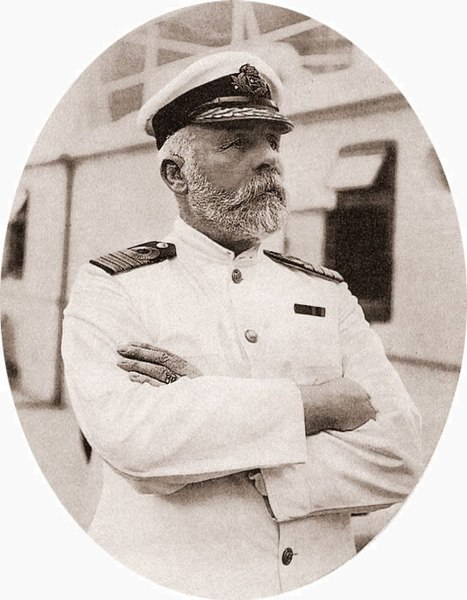

Captain Edward John Smith

Edward John Smith, 27 January 1850 – 15 April 1912) was a British Merchant Navy officer. He served as master of numerous White Star Line vessels.
He is best known as the captain of the RMS Titanic who perished when the ship sank on its maiden voyage. Raised in a working environment, he left school early to join the
Merchant Navy and the Royal Naval Reserve. After earning his master's ticket, he entered the service of the White Star Line, a prestigious British company. He quickly rose
through the ranks and graduated in 1887. His first command was the SS Celtic. He served as commanding officer of numerous White Star Line vessels,[1]
including the Majestic (which he commanded for nine years) and attracted a strong and loyal following amongst passengers.